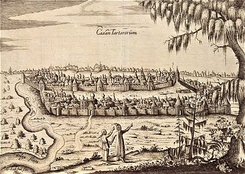
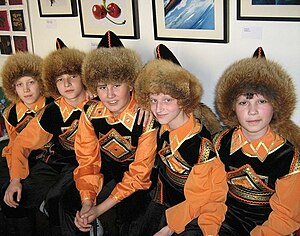
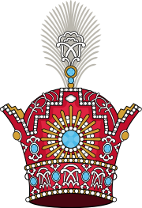

(Татарский: Казан ханлыгы, романизированный: Казань xanlıgı; русский: Казанское ханство, романизированный:
Казанское ханство) — ханство, возникшее в результате распада Золотой Орды (1441–1552 гг.), возглавляемое
братом Батыя Улуг-Мухаммедом, потомком Тимура. Лысый и его сын Махдитик жили в независимом ханстве,
основанном в Казани, которое примерно охватывало регион Волжской Булгарии, нынешнюю Чувашскую Республику,
Республику Марий Эл и Республику Татарстан, Республику Удмуртию и Республика Башкортостан.
История
Во время правления Махдитика было официально создано ханство. В 1452 году один из его братьев, Касым-хан,
бежал в Москву. Московское княжество пожаловало ему участок земли его имени на реке Оке, названный
Касимовым. Некоторые из его подчиненных бежали в Крымское ханство.
Зимой 1452 года махдиты напали на Московию. Его преемник казанский хан Ибрагим даже завоевал Вятку в 1468
году, но вскоре был вынужден заключить мир с русскими и вернуть своих пленников. Два сына Ибрагима, Ильхам и
Мухаммад Амин, поссорились. Амин бежал в Россию, и Россия послала войска, чтобы сопровождать его и заставить
взойти на престол. Но он восстал в 1505 году и в следующем году разгромил московскую армию.
Чтобы контролировать Волгу, Москва напала на Казань. После смерти Амина в 1516 году Казанское ханство
вымерло. Затем Василий III из династии Крымских Граев и Московии по очереди навязывал Казани своих
кандидатов. С 1545 по 1552 год русская армия развернула поход против Казанского ханства с целью
предотвратить нашествие монголо-татар, получивший название «Казанский поход». После нескольких сражений Иван
IV 2 октября 1552 года начал осаду и нападение на Казань. Казанское ханство было ликвидировано, а среднее
течение Волги было включено в состав России. Собор Василия Блаженного, символ России, был построен в честь
взятия Иваном IV Казанского ханства.

Экономика и Население
Население — тюркоязычные башкиры, чуваши, ногайцы и уральскоязычные молдаване, марийцы (ранее известные
как черемис), удмурты и некоторые коми племена. В основном булгары.
Жители ханства занимались в основном земледелием (рожь, ячмень и овес), но также ремеслами (производство
глиняных изделий, деревянных и металлических поделок, кожи, доспехов, плугов и украшений) и
пчеловодством. Городские торговцы при ханстве в основном торговали с Кавказом, Средней Азией и
Московским княжеством.К 16 веку Россия была важнейшим торговым партнером, а основными рынками были
Казань и Большой базар на Волге.

Политика
Верховным правителем страны является Хан, чьи поведенческие решения принимаются на основе консультаций на
заседании кабинета министров. Дворянство состояло из Берка, Эмира и Мильзана, значительное влияние имело
также духовенство, существовали семинарии. Численность армии составляет от 20 000 до 60 000 человек.
Аристократия состоит из местных булгар, но телохранители хана состоят из кипчаков и ногайцев, а также
татар. Они представляют собой сочетание русской элиты, тюрков и монголов. Они состоят из четырех
основных дворян (Ал Ген, Балин, Кипчак и Ширин) возглавляли ханство. В стране ислам является
государственной религией. Большинство из них — гражданские лица. Военнопленных в основном продавали
Османской империи, Бухарскому ханству и Хивинскому ханству, а немусульмане должны были платить налог
джизия.
На протяжении всей своей истории ханство было склонно к междоусобицам и соперничеству за престолы.
Ханство за 115 лет меняло своего хана 19 раз, а некоторые восходили на престол несколько раз. Ханов
часто выбирала местная знать.

Русские источники указывают, что в Казанском ханстве говорят как минимум на пяти языках. Главным среди
них является татарский, включающий диалект казанских татар (предшественниками которых были
булгары-мусульмане) и мишары западного диалекта. Письменная форма (старотатарский). Чувашский язык —
ветвь булгарского языка, оказавшая также сильное влияние на центральный диалект татарского языка.
Остальные три группы, вероятно, малийцы, молдаване и башкиры.
Культура
Тюркское слово «Бешбармак» переводится как «Пять пальцев»: с древних времен кочевые люди не пользовались
посудой, а ели руками. Традиционно это блюдо готовят из баранины, говядины и конины. Конечно, сейчас
более распространен «бешбармак», приготовленный из мяса. Приготовьте, измельчите мясо и перемешайте с
лапшой, приготовленным картофелем и кольцами лука. Традиционно в Татарстане «Бешбармак» является
символом дома. Жена подает это блюдо как угощение уставшему мужу. При этом все ингредиенты блюда
готовятся отдельно и смешиваются непосредственно перед подачей, иначе блюдо потеряет свой неповторимый
вкус и аромат.